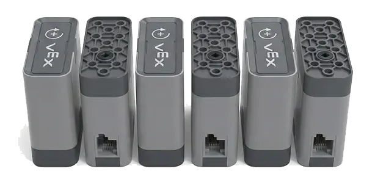
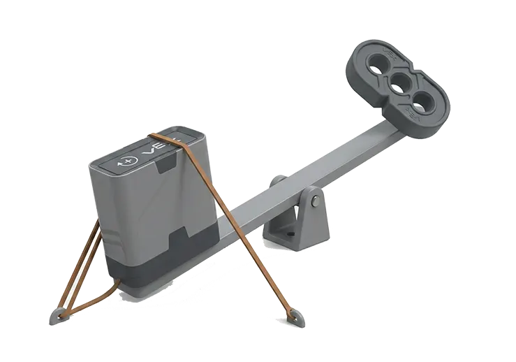
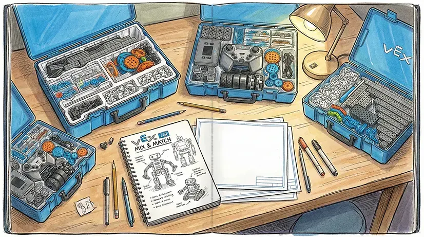

学习内容： 物理、数学、工程、编程
学习目的： 造出更聪明的机器人！
STEM 就是 Science（科学）、Technology（技术）、Engineering（工程）、Mathematics（数学） 的合体！
定义： 就像物理课上学的摩擦力、重心、杠杆原理。
我们的应用：
比如，叶恒嘉在设计爪子的时候，为了抓住滑溜溜的 Pin，他想到了摩擦力。他在爪子上缠了橡皮筋，Pin 就不会掉下来了！
叶恒嘉： “原来橡皮筋这么厉害，这就是科学的力量啊！”
定义： 就是那些高科技的玩意儿，比如传感器、编程软件。
我们的应用： 我们用 陀螺仪 (Gyro) 告诉机器人怎么走直线，用 距离传感器 告诉机器人前面有墙壁。
定义： 像工程师一样思考，把好点子变成现实。
我们的应用： 在机器人设计中，我们体验了工程设计流程：
定义： 算数！加减乘除！
我们的应用：
数学无处不在！
1. 算分：我们要计算哪种策略得分最高（第二章算过了）。
2. 算齿轮比：我们要计算用大齿轮带小齿轮会跑多快。
3. 算角度：自动程序里，我们要算机器人转多少度才能对准 Goal。
了解了STEM，我们就像是有了内功心法！不过，光有理论还不行，真正的工程师，都是在各种条条框框（约束）里，想办法解决问题的。下一节，我们就来看看，今年的比赛，给我们设定了哪些“边界”！
王老师说，真正的工程师都是在约束 (Constraints) 下工作的。规则就是我们的约束。
约束： 机器人出发时必须能塞进 11" x 20" x 15" 的框里。
我们的挑战： 根据游戏手册附录 A (Appendix A)，高塔有 9.5 英寸高，加上 Pin 肯定超高了。如果做个固定的长脖子，肯定塞不进去。
叶恒嘉的解决方案： 根据规则 <SG3>，机器人可以在垂直方向上无限扩展。我们需要模仿叉车的运作方式，制作一个多级升降机。这样既保证了机器人能顺利“塞”进起始框，又能在比赛开始后灵活“长高”。
约束： 只能用 6 个智能电机。
我们的算计：
- 底盘： 至少要 2 个（左边一个，右边一个），不然走不动。
- 抬升： Beam 很重，可能要 1 个甚至 2 个电机才举得动。
- 抓取： 爪子开合要 1 个。
- 翻转： 如果还要翻转手腕，又要 1 个。
宋书玥： “哎呀，电机不够用了！我想做个四轮独立驱动的豪车，看来没戏了。”
决定： 我们只能省着用，底盘就用 2 个电机。
这些“边界”虽然限制了我们，但也激发了我们的创造力！为了在这些约束下做到最好，我们就得请出我们的“秘密武器”——机械原理！让我们看看，小小的齿轮和杠杆，能爆发出多大的能量！
齿轮是机器人动力传输的核心。它们能神奇地调节动力，让你决定机器人是做‘短跑运动员’还是‘大力士’。
效果： 加速 (Speed) - 跑得快！
比喻： 就像骑自行车下坡，脚蹬一圈，轮子转好几圈！
计划： 在一代车底盘上试试 2:1 的加速，让它跑得飞快！
效果： 有力气 (Torque) - 举得动！
比喻： 就像骑自行车上坡，脚蹬好多圈，轮子才转一圈，虽然慢，但是有力气！
计划： 抬升手臂要举 Beam，用减速齿轮才能举起来。
我们要做长长的手臂去挂高塔，但是手臂越长，电机越费力。
印涵邸的发现： 我试着用手拿一根长棍子，如果在棍子另一头挂个重物，我手腕都要断了！这就是力矩！（力矩 = 力 × 距离）
而当我把棍子支在离重物很近的支点上，我能轻易的撑起重物。
叶恒嘉想到了一个妙招：橡皮筋！
我们在机器人手臂的后面挂上橡皮筋，帮电机一起拉。这就叫“重力补偿”。就像跷跷板一样，两个人一起压一头，另一头就容易翘起来了。
有了机械魔法，我们的机器人就像有了强壮的“身体”。但光有身体还不够，还得有个聪明的“大脑”来指挥它！接下来，就让我们进入编程的世界，看看怎么让机器人“活”起来！
叶恒瑞给我们上了一堂编程课。他说机器人其实很笨，必须告诉它每一步怎么做。
傻瓜做法： “往前走 2 秒”。万一电池没电了，或者轮子打滑了，它就走不到地方了。
聪明做法： “往前走，一直走到眼睛（传感器）看到墙壁只有 10 厘米的时候停下来”。这就是闭环控制！
这个听起来好高级！叶恒瑞说，这就好比我们走路走歪了，会自动修整回来。PID 就是让机器人走直线的法宝。
这一章我们学了好多理论知识。虽然还没开始搭积木，但我们觉得自己已经像半个工程师了！
下一步计划： 拿出笔和纸，开始画设计图！我们要把头脑里的想法画出来，然后选一个最棒的方案开始搭建一代车！
